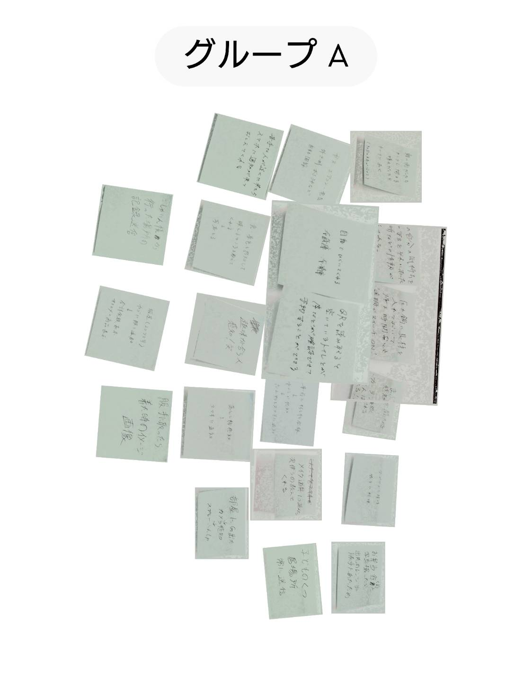

IoTとは、モノのインターネットの事で、家具などをインターネット上のサーバーに接続したら、センサーや遠隔操作で操作できるようになるものです。
https://youtube.com/shorts/0vSIqev42DM?si=hSWiEtQ0MPPqXLN1
↑リンクのURLです


私が提案するのは、瞼が開いた事を感知したら、カーテンを開けるなどの朝の動作をやってくれる製品です。
瞼にQRコードのシールを貼り付け、それをカメラで読み取りながら就寝します。そして、翌朝瞼を開けたらQRコードがズレるので、それを感知したカメラがサーバーに情報を送信し、カーテンに開くように命令します。
朝の二度寝防止のために考えました。カーテン以外にもドアや目覚ましと連動させたら良いと思いますが、その程度で起きれたら苦労はいりません。
もっと機能を付ける必要があります。
何かをどうにかして「起きないとスマホが水没する」といった機能を付ければいいかもしれません。
骨折した日の夜は腕がズレる度に痛んで寝つけなかったので、瞼がくっつく度に激痛が走るようにするとか？
しかしそれでは瞬きができないので、瞼を閉じる秒数を指定する必要があります。でもそれだと秒数によっては本末転倒なので、、、
取り敢えず人間の眠気は甚大なので、もっと何かしないと製品化はできない気がします。ぬん！